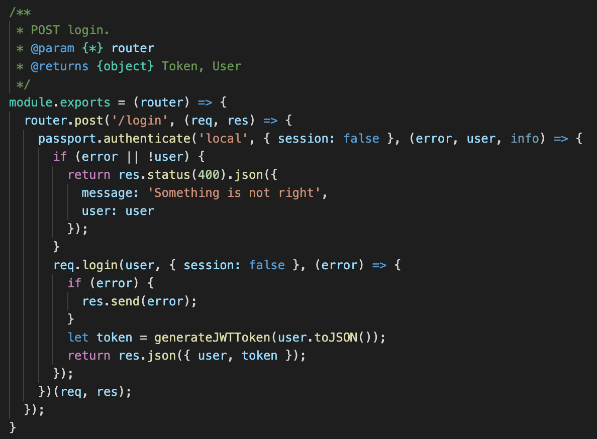
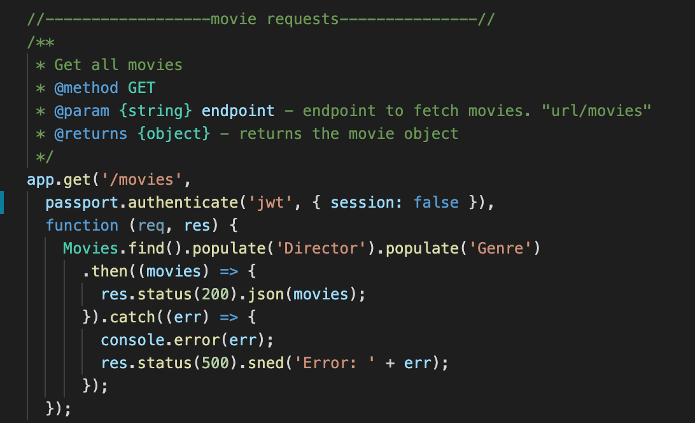

Case Study myFlix
Tech Stack
- Node.js
- Express.js
- REST architecture
- MongoDB
- Mongoose
Duration
2 months
Overview
This is the server-side component of myflix movie app,built with Node.js, Express.js and uses a RESTful API,
that provides users with access to information about movies, directors, and genres. Users are able to create an account,
update their personal data, and create a list of favorite movies.
This RESTful backend serves two separate frontend clients, one built with React and Redux, the other with Angular.
Objective
The aim of the project was to create an interactive and enjoyable web application for movie enthusiasts
who enjoy reading information about different movies.
Backend Objective: The server-side of myFlix application will ensure the users have access to information about different movies,
that their requests can be processed and that all necessary data can be stored.
Frontend Objective: The client-side will create the interface users will use when making requests to and receiving responses from the server-side.

Purpose
I have built myFlix project as part of my full-stack immersion course at CareerFoundry, to demonstrate my mastery of full-stack JavaScript development.
Challenges
I faced a challenge during the backend development, when I was creating NoSQL database and I had to connect to my project through mongo shell,
my mongoDB installed with HomeBrew installed the latest version 5.0 and to connect to mongoDB through mongo shell you have to choose mongo shell version
and the latest version on the website is 4.2.
Strategy used: I have lowered my version to 4.2 to connect to Mongo Atlas but by doing so I lost all my database (movies, genres, directors,etc..).
The shell version problem was solved but I had to rewrite my database from scratch.
Structure
-Backend/Server-side
-Frontend/Client-side (React)
-Frontent/Client-side (Angular)

JWT authentication
Back-End
Using Node.js and Express.js I designed the RESTful API and tested the endpoints with Postman. I used MongoDB to create a non-relational database and Mongoose to create business logic. The REST API can be accessed via commonly used HTTP methods like GET or POST. Similar methods CRUD can be used to retrieve data from and store data in a non relational way. I also included Passport & JWT to authenticate and authorize the users of the app. And last but not least, I hosted the app's back-end API on Heroku.

GET method
React Front-End
Using React, I created separate components for the different views of the application.
(Welcome page, login/register, movies, genres, directors & user profile).
I implemented logic to handle app requests and navigate users to different views within the app,
using React-Router-Dom. (As you can see in the image "React-Router") the route path I used so that the
user is able to easily navigate from one page to another.
Using Redux and React-Redux, I have managed the app's state and data flow by implementing the flux design pattern.
And finally, I hosted the app's front-end client on Netlify.
React-Router
Welcome page component
Angular Front-End
Using Angular, I created a single page, responsive movie app with routing and several interface views
(Welcome page, login/register, movies, genres, directors & user profile).
As you can see an example of one of the components in the screenshot "welcome page component".
I used Angular material to design the app and Typedoc to comment the codebase.
And finally I hosted the app's front-end client on gh-pages.
Developer's Note
This was both my favorite & most challenging project, I was able to manage the technical complexity of backend, create my own API and master the MEAN & MERN stack.
I have learned that both stacks are dependable frameworks for fast & speedy front-end development resulting in light-weight Javascript apps. Yet, the foremost difference lies in the way it is designed,
making MEAN stack a better choice for large-scale apps and MERN stack in quicker development of smaller apps.
The journey was not smooth, but with the support of my mentor and tutor I conquered the obstacles.
For future projects I would use the same methods and principles in working except I would connect to mongoDB Atlas first and then create my database to prevent database loss in case of version differences.